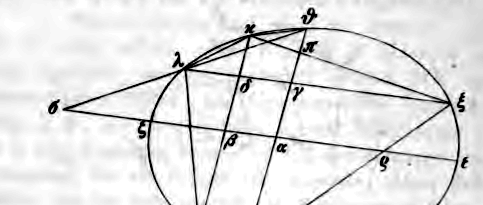

Single-Compass Constructions and Five-Point Conics¶
Synagoge Book VIII, Chapters 26–38 (Hultsch III, pp. 1074–1095) · Critical English Edition
Turning to instrumental geometry (τὰ ἰδίως λεγόμενα ὀργανικά), Pappus observes that architects, stonecutters, and engineers constantly face practical constraints in the field: restoring the true diameter of a broken temple column from a surviving fragment (Prop. 13), constructing the conic section through five given points on a cylindrical surface (Prop. 14), or executing plane constructions with a single fixed compass opening (τὰ ἑνὶ διαστήματι γραφόμενα, Hultsch III p. 1074 ff.)—inaugurating the fixed-“rusty”-compass tradition later carried forward by Abū al-Wafāʾ, Tartaglia, Ferrari, Cardano, and Poncelet–Steiner.
Archival Plates (Hultsch Vol. III, pp. 1074, 1078 / folios 0083, 0087)¶


